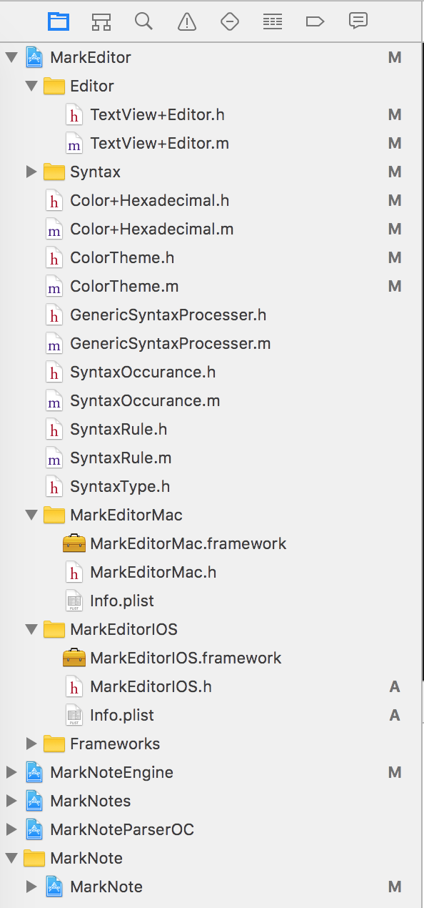
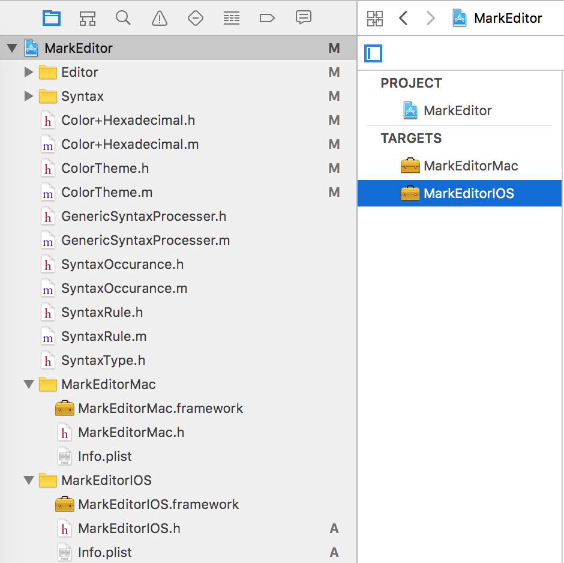

<article class="post" itemscope itemtype="http://schema.org/BlogPosting">
    
    <header class="post-header">
        
        <p class="post-meta"><time datetime="31 Jan 2017" itemprop="datePublished">31 Jan 2017</time></p>
    </header>
    
    <div class="post-content" itemprop="articleBody">
        <h1>填平macOS和iOS之间的鸿沟</h1><p>tags:开发随笔<br/></p>
<p><br/></p>
<p>虽然mac存在了很多年之后才有了iOS，但是对很多程序员而言，可能是先熟悉了 UIKit之后才去熟悉AppKit。<br/></p>
<p>我自己也是这样。在开发了MarkNote之后，我想把MarkNote的笔记体验延伸到mac。<br/></p>
<h2>有没有工具或者库可以直接将iOS应用转换为macOS应用</h2><p>最初我只是想让iOS版本的MarkNote照搬过来，于是我想看看是否有捷径可走。最理想的情况下，有一个工具，直接把iOS上的代码转换一下，就可以在mac下运行。或者直接在mac上给iOS应用提供一个runtime？<br/></p>
<p>查了一下之后，发现真有人有类似的想法。<br/><ul>
<li><a href="https://github.com/bigzaphod/chameleon">chameleon</a>将UIKit移植到OS X。然而，这个库只实现了UIKit中的大部分API。更可惜的是，这个库三年前就停止更新了。</li>
<li><a href="http://kenai.com/projects/umekit">UMEKit</a>也做了类似的事，然而，实现的更少。而且，7年前就停了。</li>
</ul>
</p>
</ul>
<p>这些库之所以夭折，在很大程度上是因为其复杂程度远远超过看起来的那样。桌面应用和移动应用的机制有很大的不同。虽然UIKit和AppKit共享了很多概念，但是API依然有很大的不同。比如UIView和 NSView虽然看起来很像，但是实现细节和使用上有很多不同。<br/></p>
<h2>MarkNote的macOS实现策略</h2><p>虽然Chameleon看起来很有意思，但是我最终没有采用这个方案。一来我担心其局限性的制约，二来我找到了现在看来效果非常好的策略。<br/></p>
<p>我的设计策略总结起来是以下两点：<br/><ul>
<li><strong>正视macOS和iOS的不同</strong>。 mac有mac擅长的地方，在很多方面受的局限更小，应用之可以获得更好的用户体验。比如这篇文字，虽然在iOS上也可以撰写，还是不如mac上写起来畅快淋漓。</li>
<li><strong>尽量在2个平台间复用代码</strong>。对于MarkNote而言，我希望核心的代码是完全通用的。比如markdown解析，笔记管理等等。</li>
</ul>
</p>
</ul>
<p>我采用了以下的办法来提高复用：<br/><ul>
<li><strong>业务逻辑和UI操作彻底分离</strong>。 核心的业务逻辑在理想情况下应该只依赖于 <code>Foundation</code> 而不依赖于 <code>Cocoa</code> 或者<code>UIKit</code>。比如Markdown解析，就仅仅依赖于Foundation。</li>
<li><strong>将通用的代码单独建project并打包为framewok</strong>。MarkNote的工程视图如下：</li>
</ul>
<br/>其中：<br/>MarkNoteParserOC 是Obj-C版的markdown 解析器，已经<a href="https://github.com/marknote/marknoteparserobjc">开源</a>。<br/>MarkEditor是语法高亮编辑器，支持iOS和macOS。不仅为mac版和iOS版的MarkNote使用，同时也是<a href="https://itunes.apple.com/app/instantcoder/id1067517686?l=zh&ls=1&mt=8">InstantCoder</a>的代码编辑器。其一个<a href="https://github.com/marknote/marknoteview">早期版本也已经开源</a>。<br/>MarkNoteEngine是笔记管理和iCloud同步的核心库，为mac版和iOS版的MarkNote使用。<br/>MarkNotes是mac版的MarkNote。<br/>MarkNote是iOS版的MarkNote。<br/><ul>
<li><strong>一个Framework，两个target</strong>。</li>
</ul>
在同一个工程中，分别给macOS和iOS创建不同的target。<br/><br/><ul>
<li><strong>使用宏来区分不同的版本</strong>。</li>
</ul>
虽然代码很多相同，但是还是有很多系统之间的差异。这个时候可以用宏来处理。比如我需要给mac版的加openWithCompletionHandler，而无需给iOS版添加它，就可以用类似下面的代码：</ul>
</ul>
</ul>
</p>
<pre class="no-highlight">

#if !TARGET_OS_IPHONE
- (void)openWithCompletionHandler:(void (^)(BOOL success))completionHandler;
#endif</pre>
<ul>
<li><p><strong>使用宏来融合UIKit和AppKit的不同</strong>。</li>
</ul>
AppKit和UIKit中很多API都是相似的。比如NSColor和UIColor，NSView和UIView，等等。这个时候，用宏定义一个别名，可能是融合使用的一个好办法。<br/>比如，我的文本编辑器在本质上只是NSTextView或者 UITextViewUI的一个category。<br/>因此我定义了一个宏BaseTextView来分别在macOS上指向NSTextView，而在iOS上指向UITextView：</ul>
</p>
<pre class="no-highlight">

#if TARGET_OS_IPHONE
#import &lt;UIKit/UIKit.h&gt;
#define BaseTextView UITextView
#else
#import &lt;Cocoa/Cocoa.h&gt;
#define BaseTextView NSTextView
#endif</pre>
<p>这样，我后面也就直接用BaseTextView好了。比如<br/></p>
<pre class="no-highlight">

@interface BaseTextView(Editor)</pre>
<p>MarkNote IOS版在2015年5月上线，mac版在2015年11月上线。之后两个版本都分别更新了十多次。上面所描述的策略和方法，使得我的代码维护起来清晰而简单。<br/></p>
<h2>参考资料</h2><ul>
<li><p><a href="https://objccn.io/issue-14-5/">从 UIKit 到 AppKit</a></li>
</ul>
</p>

    </div>
    
</article>
